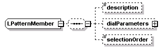
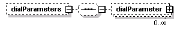
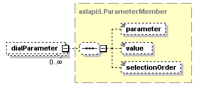

| diagram |  |
| namespace | http://www.cisco.com/AXL/API/10.5 |
| children | description dialParameters selectionOrder |
| source | <xsd:complexType name="LPatternMember"> <xsd:sequence minOccurs="0"> <xsd:element name="description" type="xsd:string" minOccurs="0" maxOccurs="1"/> <xsd:element name="dialParameters" minOccurs="0" maxOccurs="1"> <xsd:complexType> <xsd:sequence minOccurs="0"> <xsd:element name="dialParameter" type="axlapi:LParameterMember" minOccurs="0" maxOccurs="unbounded"/> </xsd:sequence> </xsd:complexType> </xsd:element> <xsd:element name="selectionOrder" type="axlapi:XInteger" minOccurs="0" maxOccurs="1"/> </xsd:sequence> </xsd:complexType> |
| diagram | |||||||
| type | xsd:string | ||||||
| properties |
|
||||||
| source | <xsd:element name="description" type="xsd:string" minOccurs="0" maxOccurs="1"/> |
| diagram |  | ||||||
| properties |
|
||||||
| children | dialParameter | ||||||
| source | <xsd:element name="dialParameters" minOccurs="0" maxOccurs="1"> <xsd:complexType> <xsd:sequence minOccurs="0"> <xsd:element name="dialParameter" type="axlapi:LParameterMember" minOccurs="0" maxOccurs="unbounded"/> </xsd:sequence> </xsd:complexType> </xsd:element> |
| diagram |  | ||||||
| type | axlapi:LParameterMember | ||||||
| properties |
|
||||||
| children | parameter value selectionOrder | ||||||
| source | <xsd:element name="dialParameter" type="axlapi:LParameterMember" minOccurs="0" maxOccurs="unbounded"/> |
| diagram | |||||||
| type | axlapi:XInteger | ||||||
| properties |
|
||||||
| source | <xsd:element name="selectionOrder" type="axlapi:XInteger" minOccurs="0" maxOccurs="1"/> |